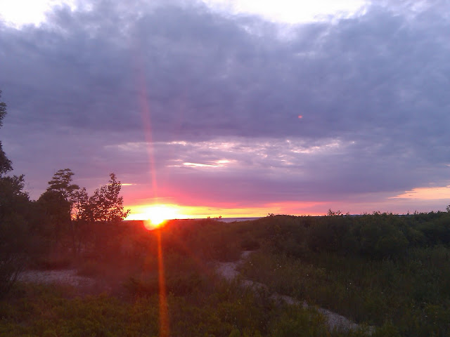
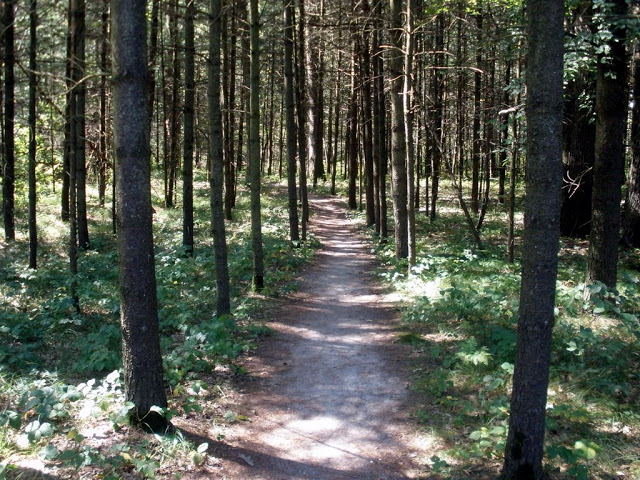

Let's Go Camping
Introduction
I first found a love for camping while I was in the Boy Scouts. Spending a week every summer being out in the woods at camp was so much fun. Learning how to do things like start fires, first aid, surviving out in the woods, and tying knots were all life long lessons. Living in Michigan there are tons of places where you can pitch a tent, park an RV, or rent a cabin in the great outdoors. I have visited a few of these sites, and I'll be sharing my favorites with you.
What you'll find here
This site is designed to be a basic guide for where to go in the State of Michigan for your camping experience. This site also has guides on what to bring, and ideas on what to cook on your trip out into the woods.
Make sure to check the Links section where you can find useful apps for your phone or tablet. The links section also has information about the Michigan Passport for your vehicle, along with other useful Michigan DNR sites. If you have any questions feel free to e-mail our site manager directly, or fill out our handy form on our contact page.